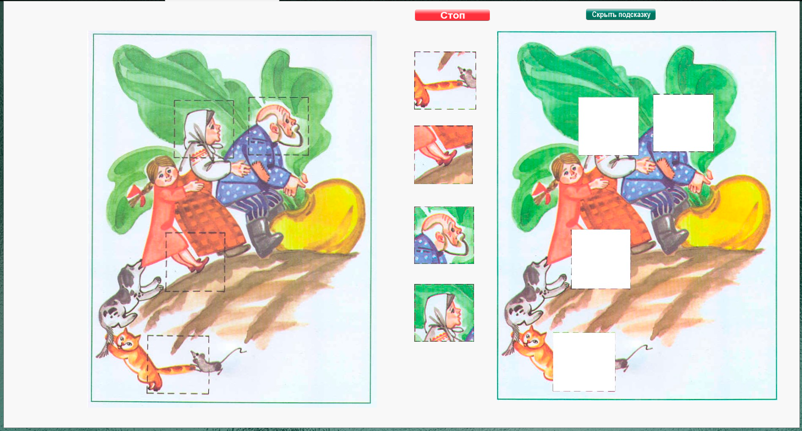
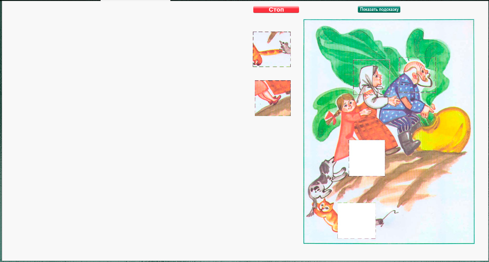

Методика «Фрагменты сказок» (Забрамная С.Д., Боровик О.В.)
Методика «Фрагменты сказок» (Забрамная С.Д., Боровик О.В.) описание
Процедура проведения.
Ребенку показывают (поочередно) задания 1 и 2, на каждой из которых изображено по одному фрагменту из русской народной сказки. Первоначально их показывают целиком. Ребенок должен узнать, из какой сказки предложенный фрагмент. Затем вынимают вкладыши и просят поставить их на место. Задания 3 и 4 сложнее. В каждой из них по шесть вкладышей треугольной формы.
Анализируемые показатели и нормативы выполнения
Дети с нормальным умственным развитием, не страдающие нарушениями пространственной ориентировки, без труда справляются с заданиями 1 и 2 в возрасте 4 лет. Задания 3 и 4 выполняются ими в возрасте 5—6 лет. Интеллектуально сохранные дети выполняют задания с интересом и, как правило, находят место вкладышам на основе зрительного соотнесения.
Дети с задержкой психического развития проявляют интерес к заданиям, но выполняют 1 и 2 к 5—6 годам, а 3, 4 — к 7—8 годам при оказании помощи. Имеют место случаи выполнения задания методом «проб и ошибок».
Умственно отсталые дети. Большинство умственно отсталых детей выполняют задания к 1 и 2 в возрасте 7—8 лет, при этом, как правило, не нуждаются в помощи. Задания 3 и 4 детьми этого возраста не выполняются и при оказании помощи.
Оценка результатов
Характер деятельности ребенка:
Виды возможной помощи:
Стимулирующая помощь
Направляющая помощь:
Обучающая помощь:
Протокол фиксации результатов исследования
_________________________________ _______________
ФИО Дата рождения
Методика |
Фрагменты сказок |
|||
Автор методики (адаптации, модификации) |
Забрамная С.Д., Боровик О.В. |
|||
Цель: |
Исследовать способность узнавания ранее известных сказок по отдельно изображенным фрагментам; умение пространственно соотносить детали и целое; воображение детей. |
|||
Дата / специалист |
||||
Результат: вывод об уровне развития |
||||
Примечание |
||||
Процесс выполнения диагностической методики |
||||
№ |
Факт выполнения / время |
Характер деятельности ребенка |
Виды помощи |
|
1 |
||||
2 |
||||
3 |
||||
4 |
||||
Логика заполнения протокола
Имя специалиста – логин при входе в программу.
Дата – дата и время прохождения упражнения в формате дд.мм.гггг. чч:мм
Факт выполнения / - заполняются в зависимости от выбора специалиста в разделе «Оценка результатов».
/ время – время, затраченное на выполнение задания.
Ячейки «Характер деятельности ребенка», «Виды помощи» заполняются в зависимости от выбора специалиста в поле «Оценка результатов» либо самостоятельно.
Остальные ячейки заполняются (правятся) специалистом самостоятельно.
Описание элементов управления.
 Кнопки «Показать / Скрыть подсказку» - При нажатии показывается / скрывается подсказка в левой части экрана
Кнопки «Показать / Скрыть подсказку» - При нажатии показывается / скрывается подсказка в левой части экрана
Выполнение упражнения
Выбрать в меню № задания. Нажать кнопку «Начать упражнение» (включая секундомер, закрывая область оценки результата и открывая задание на весь экран).

Выполнить задание согласно пункту «Процедура проведения». Вернуть фрагменты на свои места при помощи мыши с зажатой левой кнопкой.

По окончании задания нажать кнопку «Стоп», открывая поле оценки результата. При необходимости выбрать факт выполнения, характер деятельности, виды помощи, и нажать кнопку «Сформировать протокол». Произвести оценку результата (заполнить оставшиеся ячейки протокола) согласно пункту «Анализируемые показатели и нормативы выполнения».
Только после формирования протокола по выполненному заданию можно приступить к выполнению следующего!